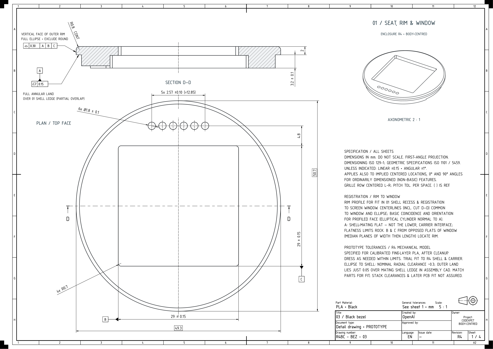
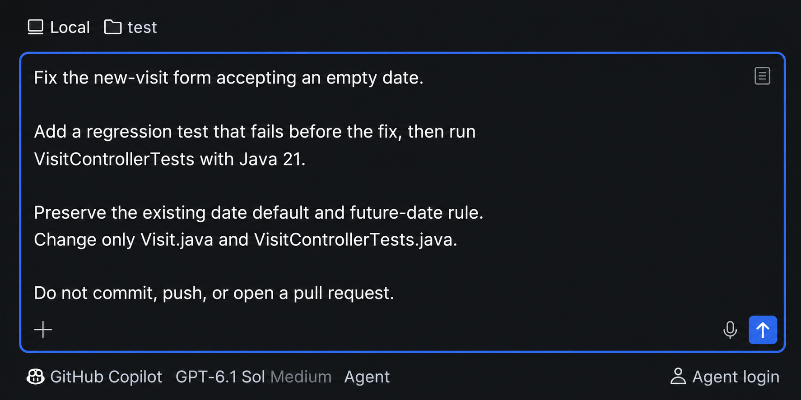
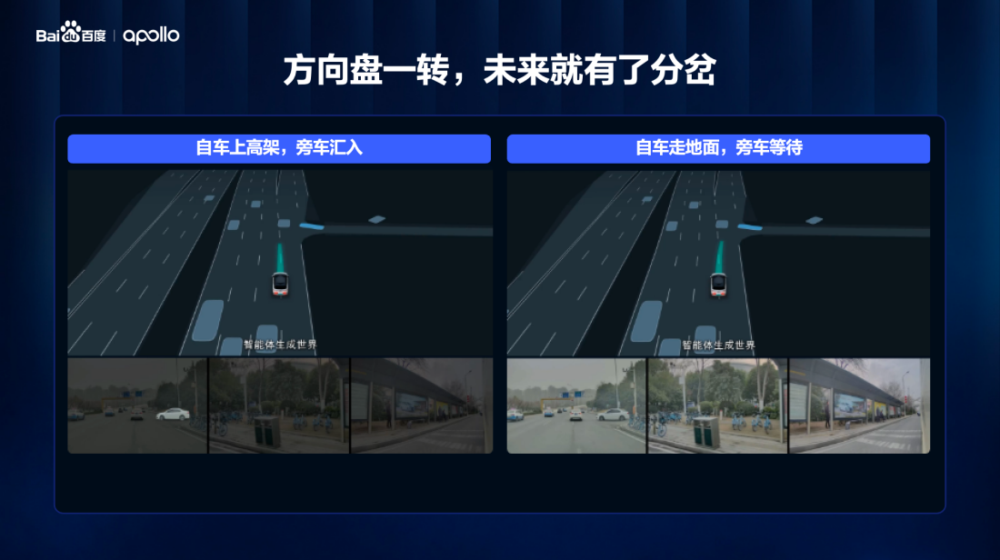

AI NEWS ISSUE 37
OpenAI의 하드웨어 실험, 설계에서 시제품까지
기구·회로·소프트웨어를 함께 설계한 OpenAI의 실험을 살펴봅니다. Open WebUI 0.13의 통합 작업공간, JetBrains Air의 Copilot 연결, 바이두 Apollo World의 가상 주행 검증도 함께 읽습니다.
AT A GLANCE
30초 요약
- OpenAI는 Astra로 장치를 설계하고 외부 제조업체가 시제품을 만든 실험을 공개했습니다. 제조 제약을 맞추는 검토와 수정은 계속 필요했습니다.
- Open WebUI 0.13은 대화 옆에 파일·터미널·브라우저·Git을 모았습니다. 연결 환경의 지원 기능과 바뀐 실행 제한을 함께 확인해야 합니다.
- Copilot과 JetBrains Air는 로컬·클라우드 작업을 연결합니다. Copilot 사용량과 지출 한도는 Air 관리 화면에서 함께 관리되지 않습니다.
- 바이두 Apollo World는 차량의 행동에 반응하는 가상 교통 환경을 다룹니다. 발표된 가상 주행량과 실제 도로의 안전 성과는 구분해 읽습니다.
자료 확인 2026년 11월 4일 한국시간 기준입니다. 11월 3일자 발표·릴리스와 공식 문서를 확인했습니다. 바이두는 출처가 바이두로 명시된 발표문 전재와 Reuters 보도를 대조했습니다. 제품 성능을 직접 측정하지는 않았습니다.
01 / OPENAI
회로와 기구를 함께 설계하고,
제조 조건에 맞춰 다듬었습니다
작은 전자기기를 만들려면 겉모양뿐 아니라 부품의 자리, 회로 연결, 조립 방식과 소프트웨어도 맞아야 합니다. OpenAI는 Codex와 대화하는 실험용 장치를 GPT-6·Astra로 설계했습니다. 외형과 내부 구조, PCB의 부품 배치·연결, 화면과 펌웨어를 함께 다룬 사례입니다. 11월 3일 공식 발표 ↗
회사 설명에 따르면 두 명이 본업과 병행해 일주일 미만에 설계했고, 외부 제조업체는 한 달 미만에 소량의 시제품을 만들었습니다. 다만 제조 준비에는 여러 차례 검토와 수정이 필요했습니다. 생산 한계, 허용 오차, 조립 조건을 Astra가 일관되게 반영하지 못했기 때문입니다.


평가 점수와 제조 성과는 따로 읽습니다
OpenAI가 발표한 BenchCAD 2.0 평균 점수는 새로운 내부 모델 0.875, GPT-6 Astra의 최고 추론 설정 0.594입니다. 부품·조립체 재구성과 회로 연결을 평가한 결과이며, 제조 오류 감소율이나 새 모델의 출시 발표로 읽을 수는 없습니다.
BenchCAD 측의 설명을 보면 평가에는 도면·렌더링에서 CAD와 회로 연결을 복원하는 여섯 종류의 과제가 있습니다. 공개 예제는 평가용 조건으로 제공되며, 공식 점수는 별도의 비공개 평가 자료에서 산출합니다. 무엇을 설계했는지와 어떤 기준으로 채점했는지를 함께 봐야 점수의 의미가 분명해집니다. BenchCAD 평가 범위 ↗
산업 협력도 진행 중입니다. Chip Ganassi Racing과는 기존 부품의 3D 스캔을 편집 가능한 CAD·제조 도면으로 바꾸고, Mazda와는 공기역학·충돌 안전 설계를 탐색합니다. 협력사의 엔지니어가 결과를 검토하는 연구 단계입니다.
02 / OPEN WEBUI 0.13
대화 옆에서 파일을 보고,
실행 결과를 이어서 확인합니다
Open WebUI는 11월 3일 v0.13.0을 공개했습니다. 탭 작업공간에 파일·여러 터미널·미리보기 등을 놓고, Git 패널에서 변경을 검토할 수 있습니다. 모델이 만든 파일을 찾고, 실행하고, 결과를 다시 설명하던 흐름을 한 작업공간에 모으는 변화입니다. 공식 릴리스 ↗
브라우저 조작에는 브라우저 기능을 지원하는 Open Terminal과 Chrome이, 데스크톱 조작에는 해당 기능이 켜진 Open Terminal 연결이 필요합니다. 공식 문서는 모델이 웹 서버를 띄우면 Browser 탭의 Ports 목록에서 열고, 수정 후 다시 확인하는 흐름을 안내합니다. 웹 개발 흐름 ↗

하위 에이전트에 서로 다른 모델을 배정하는 기능도 추가됐습니다. 조사·구현·검토를 나눠 맡길 수 있지만, 모델을 늘리는 것만으로 품질이 보장되지는 않습니다. MCP 앱은 채팅 안에서 표시되며, 앱이 요청하는 도구 호출마다 사용자 확인을 받도록 했습니다.
업데이트할 때는 기본 제한도 다시 봅니다
| 항목 | 변경과 확인할 점 |
|---|---|
| 응답 한 번의 도구 호출 | 네이티브 함수 호출의 기본 상한이 256라운드에서 1,024라운드로 늘었습니다. 호출 한 건과 라운드는 구분합니다. |
| 하위 에이전트 | 동시·비동기 실행 수, 반복 수, 출력 길이의 기본 제한이 없어졌습니다. 운영자가 필요한 상한을 지정해야 합니다. |
| 데이터베이스 | 스키마 변경이 포함됩니다. 프로젝트는 백업을 권고하며, 여러 인스턴스의 롤링 업데이트를 지원하지 않는다고 명시했습니다. |
설정 이름은 CHAT_RESPONSE_MAX_TOOL_CALL_ITERATIONS와 SUBAGENTS_MAX_*입니다. 릴리스의 Changed 절에서 현재 설정과 기본값을 대조할 수 있습니다.
이 작업공간이 사람의 코드 복사와 오류 전달을 줄여줄까요? 아래의 Open WebUI 도구 연결 실험에서 같은 버그를 채팅만 쓸 때와 실행 도구를 연결했을 때 각각 고쳐보도록 제안합니다.
03 / GITHUB COPILOT × JETBRAINS AIR
코딩 작업은 연결하되,
구독과 관리 범위는 확인합니다
GitHub는 11월 3일 JetBrains Air에서 Copilot을 골라 작업을 맡기고 결과를 검토하는 연결을 발표했습니다. 개발 환경과 코딩 에이전트 사이의 통신 규약인 ACP를 사용하며, 기존 Copilot 플러그인과 함께 선택할 수 있는 작업 방식입니다. GitHub 공식 발표 ↗


클라우드 작업에는 Air Teams가 활성화된 기업 조직의 JetBrains 계정, Copilot 구독, 관리자의 Copilot 허용이 필요합니다. 작업은 새 가상머신의 Docker 컨테이너에서 수행되고, 이전 작업의 실행 상태를 이어받지 않습니다. 빌드·테스트·패키지 설치가 로컬 개발 환경을 바꾸지 않도록 분리한 구조입니다. JetBrains의 격리 환경 설명 ↗
비용은 JetBrains AI 크레딧이 아니라 Copilot 요금제에 연결됩니다. Air의 거버넌스·분석에는 Copilot 사용량이 포함되지 않고, Air 안에서 Copilot 지출 한도를 정할 수도 없습니다. 개별 작업에 개인·조직 요금제 중 무엇을 적용할지도 선택할 수 없습니다.
여러 세션을 한곳에서 볼 수 있다는 점은 편리합니다. 팀에 도입할 때는 작업을 어떻게 나눌지와 함께, 결과를 누가 합치고 어느 서비스에서 이용 내역을 확인할지도 정해두면 좋겠습니다.
04 / BAIDU APOLLO WORLD
가상 도로가 차량의 행동에
반응하도록 만듭니다
바이두는 11월 3일 선전의 AI Day·Apollo 행사에서 Apollo World를 공개했습니다. 회사 발표문에 따르면 가상 환경의 차량·보행자가 주변 상황에 반응하고, 카메라·라이다 관측 데이터를 생성해 자율주행 시스템의 훈련과 검증에 사용합니다. Apollo Go의 글로벌 테스트에 이미 적용 중이라고 설명했습니다. 바이두 발표문 전재 ↗


발표 내용을 바탕으로 구성한 설명도
행동의 결과가 다음 입력으로 돌아옵니다
- 01 · 관측가상 센서 입력카메라 영상과 라이다 데이터를 주행 시스템에 전달합니다.
- 02 · 판단과 행동차량이 행동 선택주행 시스템이 감속·차선 변경·양보 등을 결정합니다.
- 03 · 환경 반응주변 상황 변화다른 차량·보행자의 반응을 반영해 다음 상태를 만듭니다.
환경이 바뀐 결과 → 다음 센서 입력으로 돌아가 반복
Reuters는 바이두를 인용해 하루 최대 10만 km의 가상 주행을 생성할 수 있다고 보도했습니다. 이는 시뮬레이션 생성량이며 실제 도로에서 검증한 거리나 사고 감소율을 뜻하지 않습니다. Reuters 보도 ↗
바이두가 제시한 평가 관점도 영상이 보기 좋은지에 머물지 않습니다. 행동에 따라 환경이 달라지는지, 물리 법칙을 따르는지, 오래 실행해도 상태가 일관되는지와 실시간 응답을 봅니다. 이번 자료에서는 가상 검증이 실제 사고율을 얼마나 줄였는지 비교한 결과까지 확인되지는 않았습니다.
OUR VIEW
좋은 결과물에는
실행 환경의 조건도 담깁니다
하드웨어의 허용 오차, 개발 도구의 실행 권한, 자율주행의 교통 상황은 서로 다른 문제입니다. 이번 소식을 읽으며 우리가 가져올 수 있는 공통 질문은 “만든 결과를 어디에서, 어떤 기준으로 확인할 것인가”입니다.
코드가 테스트를 통과해도 실제 파일 형식이나 실행 환경이 다르면 실패할 수 있습니다. 반대로 에이전트가 실패 로그를 바로 읽고 다시 고칠 수 있다면, 사람이 도구 사이에서 결과를 전달하는 수고를 줄일 여지가 있습니다. 통합 작업공간의 가치는 이런 과정에서 확인할 수 있습니다.
Workless Engineering에서는 작성·실행·검토 사이에 사람이 반복해서 전달하던 일을 찾아, 확인 가능한 결과로 이어지게 만들어 봅니다.
모든 작업을 자동화할 필요는 없습니다. 에이전트에게 파일 수정과 테스트를 맡기고, 사람은 요구사항이 빠지지 않았는지와 변경을 받아들일지를 검토하는 작은 범위부터 시작할 수 있습니다.
OUR LAB · 02 OPEN WEBUI에서 이어지는 실험
Open WebUI에 도구를 연결하면,
사람이 전달할 일이 줄어들까요
02번 소식에서 Open WebUI는 대화 옆에 파일·터미널·브라우저를 모았습니다. 공식 문서는 AI가 파일을 고치고 서버를 실행하면 사용자가 Browser 탭에서 결과를 확인하는 흐름을 보여줍니다. 이번 실험은 이 연결이 사람의 코드 복사와 오류 전달을 얼마나 줄이는지 확인하려는 제안입니다. 실험의 바탕이 된 공식 작업 흐름 ↗
상품표 업로드 오류를 과제로 고른 이유는 파일 수정 → 검사 실행 → 화면 확인을 모두 거쳐야 하기 때문입니다. 같은 Open WebUI에서 채팅만 쓰는 A와 Open Terminal을 연결한 B로 이 과정을 비교합니다.
아직 실행하지 않은 실험 제안입니다. 상품표 오류는 실습용 앱에 넣을 가상 버그이며, 이번에 확인할 대상은 Open WebUI의 작업 흐름입니다.
1. 같은 버그가 있는 작업 폴더를 두 개 준비합니다
먼저 상품표(CSV 파일)를 올리면 ‘가져온 상품’과 ‘오류 목록’을 보여주는 작은 웹 화면을 만듭니다. 여기에 재고 0과 빈칸을 모두 미입력으로 처리하는 버그를 넣습니다. 이 폴더를 A와 B로 복사하고, 라이브러리 버전과 실행·검사 명령을 같게 맞춥니다. 둘 다 같은 파일을 올렸을 때 같은 오류가 나는지 확인합니다. 실제 쇼핑몰이나 운영 데이터에는 연결하지 않습니다.
두 방식에 똑같이 줄 상품표
품절 상품은 가져오고, 빈칸만 걸러냅니다
| 상품명 | 입력한 재고 | 고친 뒤 화면 |
|---|---|---|
| 파란 머그 | 0 | 가져온 상품에 재고 0으로 표시 |
| 흰 접시 | 빈칸 | 오류 목록에 ‘재고 미입력’ 표시 |
2. 같은 수정 요청을 보내고, 두 방식으로 진행합니다
Open WebUI 0.13에서 같은 모델·추론 설정으로 새 대화 두 개를 엽니다. A는 실행 도구를 연결하지 않고 소스 파일과 상품표를 채팅에 첨부합니다. B는 Open Terminal을 연결하고 같은 파일을 작업 폴더에 넣습니다. B의 파일 수정·명령 실행·Chrome 브라우저 조작이 가능한지 먼저 확인한 뒤, 두 대화에 다음 요청을 보냅니다.
“이 상품표를 올리면 재고가 0인 파란 머그까지 오류로 처리됩니다. 재고 0은 그대로 가져오고, 빈칸인 흰 접시만 오류 목록에 남도록 고쳐주세요. 화면과 저장할 데이터가 모두 이 규칙에 맞아야 합니다.”
수정 요청 이후의 진행 순서
중간 작업을 누가 하는지 비교합니다
A · 채팅만 사용
- AI가 고칠 코드와 검사 방법을 답합니다.
- 사람이 코드를 파일에 옮기고, 테스트와 화면 확인을 합니다.
- 틀리면 사람이 오류를 채팅에 붙여 넣고, 새 수정안을 받아 다시 적용합니다.
B · Open Terminal 연결
- AI가 Open Terminal의 작업 폴더에서 코드를 고칩니다.
- AI가 터미널에서 검사를 실행하고, 연결된 Chrome 브라우저로 화면을 확인합니다.
- 틀리면 AI가 오류를 읽고 다시 수정·검사합니다.
요청을 보낸 뒤 수정과 중간 검사에는 각 방식에 15분씩 배정합니다. 마지막 사람 검토 시간은 따로 기록합니다. A에서 나온 해결 코드를 B에 넘기지 않고, A에서는 AI가 준 수정안을 그대로 적용합니다. 사람이 직접 코드를 고쳐야 했다면 그 부분도 기록합니다.
3. 사람이 같은 상품표를 다시 올려봅니다
AI가 완료했다고 하면 사람이 A의 별도 브라우저와 B의 Open WebUI Browser 탭에서 같은 상품표를 올립니다. 파란 머그는 재고 0으로 들어오고, 흰 접시만 오류 목록에 남는지 확인합니다. 화면뿐 아니라 저장할 상품 데이터에서도 같은 값이 나와야 합니다.
마지막으로 재고가 3인 컵을 추가한 파일도 올려봅니다. 이 상품도 정상적으로 들어와야 합니다. 수정이 제한시간 안에 끝나지 않았거나 마지막 확인에서 값이 틀리면 ‘미완료’로 남깁니다. 실행 도구가 멈췄다면 코드 오류와 구분해 적습니다.
4. 고친 결과와 사람이 한 일을 함께 적습니다
| 기록할 것 | A · 채팅만 | B · 터미널 연결 |
|---|---|---|
| 요청대로 고쳐졌나 | 완료 / 미완료 | 완료 / 미완료 |
| 사람이 코드를 옮긴 횟수 | 직접 기록 | 직접 기록 |
| 사람이 검사를 실행한 횟수 | 직접 기록 | 직접 기록 |
| 사람이 오류를 전달한 횟수 | 직접 기록 | 직접 기록 |
| 사람이 직접 코드를 고친 부분 | 없음 / 수정 내용 | 없음 / 수정 내용 |
| 마지막 검토에 든 시간 | 직접 기록 | 직접 기록 |
두 방식이 모두 제대로 고쳤다면, B에서 사람이 코드를 옮기거나 오류를 전달하는 일이 줄었는지 봅니다. 중간 작업이 줄어도 마지막 검토가 더 어려워졌다면 그 이유까지 남깁니다. 이 한 건으로 진행 방식을 익힌 뒤 다른 버그에도 반복해 보면, 우리 팀에서 어떤 일을 맡길지 판단할 근거가 쌓입니다.
읽은 자료
- OpenAI · Accelerating engineering for the physical world 2026. 11. 03 · 설계 실험·BenchCAD 점수·산업 협력
- BenchCAD · 2.0 평가 범위 2026. 11. 04 확인 · 과제와 공개·비공개 자료 구분
- Open WebUI · v0.13.0 릴리스 2026. 11. 03 · 기능·기본 제한·DB 변경
- Open WebUI · 웹 개발과 브라우저 / 파일 브라우저 2026. 11. 04 확인 · 연결 조건과 공식 화면
- GitHub · Copilot과 JetBrains Air 연결 2026. 11. 03 · 제공 조건·구독·관리 범위
- JetBrains · Air 클라우드 에이전트 격리 환경 2026. 10 · 구조 설명, 11월 4일 확인
- 바이두 · Apollo World 발표문, 중국기금보 전재 2026. 11. 03 · 출처 ‘百度’ 명시, 회사 주장으로 인용
- Reuters · 바이두 Apollo World 공개, MarketScreener 게재 2026. 11. 03 · 하루 최대 10만 km 가상 주행에 대한 회사 설명
기구 도면·제품 화면·Apollo World 경로 비교 이미지는 공식 자료입니다. Apollo World 흐름도와 Open WebUI 연결 실험 도식은 이 기사에서 구성한 설명 자료이며, 실험 제안은 실행 결과와 구분했습니다.